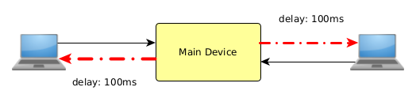
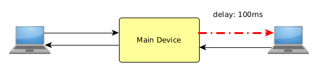

4.3. Setting Filter¶
4.3.1. Scope of filter application¶
The filter is applied to the output of the network device.
For example, if you set a delay option for only one device, the delay will occur only in one direction of the packet, and no delay will occur in the opposite direction of the packet.
{kind=link}
Fig. 4.5 Delay in one direction¶
So, if you want to delay in both directions, set the delay filter for both devices.
{kind=link}
Fig. 4.6 Delay in both directions¶
4.3.2. Edit¶
4.3.3. Edit Command¶
The filter options are temporarily stored in the edit buffer and can be checked with the edit command. The update command applies the filter settings in the edit buffer. And it will be reset to the default with the reset command.
{kind=link}
Fig. 4.7 edit command¶
4.3.3.1. (1) edit¶
Displays the contents of the edit buffer that is being edited which has not been applied to the filter yet.
{kind=link}
Fig. 4.8 edit command¶
4.3.3.2. (2) update¶
Applies the contents of the edit buffer to the filter.
{kind=link}
Fig. 4.9 update command¶
In the example above, the bandwidth is set to 64Kpbs (= 512Kbit / second).
4.3.3.3. (3) reset¶
Resets the applied and editing filter settings to the default.
{kind=link}
Fig. 4.10 reset command¶
4.3.4. Filter options¶
When you enter a filter option, it is temporarily stored in the edit buffer. The update command applies the filter settings. (See previous section)
4.3.4.1. (1) delay¶
Sets the delay time of the packet.
Format:
> delay delay_time {jitter time} {occurrence rate(%)}
Table 4.8 delay option arguments¶ argument
optional
value
delay_time
required
unit: s:second / ms:millisecond / us:microsecond
jitter time
optional
unit: s:second / ms:millisecond / us:microsecond
jitter occurrence rate
optional
unit: %
Execution example:
Generate a 100msec delay.
> delay 100ms
Generate a delay of 100msec ± 20msec.
> delay 100ms 20ms
Generate a delay of 100msec ± 20msec for 50% and a delay of 100msec for the rest.
> delay 100ms 20ms 50%
Caution:
In the case of communication where packet round trip occurs like ping command, the total delay time will be different depending on the application range of the filter.
When delay is set in both directions
a > delay 100ms
A round trip delay of 200ms will occur.
 Fig. 4.11 Both directions delay¶
If you want to make it 100ms round trip, set the delay to 50ms on both sides.
When delay is set in one direction
1 > delay 100ms
Only one direction will be delayed by 100ms.
 Fig. 4.12 Delay in one direction¶
{kind=link}
{kind=link}
When the communication volume is biased:
When one side of the communication volume is large(for example, download from the server), be careful about the setting direction of the filter.
.. figure:: /_static/filter_download.png
:width: 100%
Example of biased communication volume
4.3.4.2. (2) loss: Loss (packet loss)¶
Generates packet loss at a specified rate.
Format:
> loss loss_rate(%)
Table 4.9 loss option arguments¶ argument
optional
value
loss_rate
required
unit: %
Execution example:
10% packet loss.
> loss 10%
Note
Like delay, the filter is applied to the output of the network device.
duplicate: Duplicate
Generates duplicate packets.
Format:
> duplicate occurrence rate(%)
Table 4.10 duplicate option arguments¶ argument
optional
value
occurrence rate
required
unit: %
Execution example:
10% duplicate packets.
> duplicate 10%
Note
Like delay, the filter is applied to the output of the network device.
4.3.4.3. (4) corrupt: Corrupt¶
Rewrites the packet data (inverts a random 1bit)
Format:
> corrupt occurrence rate(%)
Table 4.11 corrupt option arguments¶ argument
optional
value
occurrence rate
required
unit: %
Execution example:
0.1% probability of rewriting a packet.
> corrupt 0.1%
Note
Like delay, be careful about the application range of the filter.
In the case of TCP/IP packets, the packet is discarded because the protocol stack detects the error with CRC check. If you disable the checksum in UDP packets, you need to detect the error at the upper layer.
4.3.4.4. (5) reorder: Reorder¶
Changes the order of packet arrival.
Format:
> reorder occurrence rate(%)
Table 4.12 reorder option arguments¶ argument
optional
value
occurrence rate
required
unit: %
Execution example:
10% probability of changing the order of packet arrival.
> reorder 10%
Note
Like delay, the filter is applied to the output of the network device.
rate: Bandwidth control
Format:
> rate bandwidth
Table 4.13 rate option arguments¶ argument
optional
value
bandwidth
required
unit: bps:byte/second / bit:bit/second / K:Kbit / M:Mbit / G:Gbit
Table 4.14 unit¶ notation
actual meaning
bps
byte/second
bit
bit/second
unspecified
bit/second
K / k
Killo (1,000)
M / m
Mega (1,000,000)
G / g
Giga (1,000,000,000)
Table 4.15 setting¶ value example
actual meaning
1000
1K bit/second
1K
1K bit/second
1Kbit
1K bit/second
1Kbps
1K byte/second
Execution example:
> rate 64kbps
Note
Like delay, the filter is applied to the output of the network device.